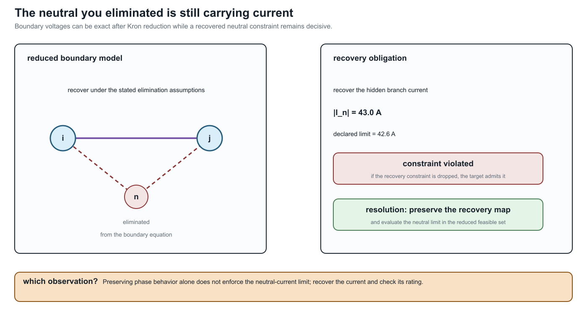

Scope and thesis
Page status: reader-facing scope contract and methodological thesis.
Scope: the book's proposed representation and preservation vocabulary for steady-state and quasi-steady power-network models. Evidence: definitions, scoped derivations, and repository-level executable witnesses. Numerical optimality: not applicable to the thesis; local solver witnesses do not establish global decision equivalence. Unresolved boundary: a universal representation theorem and external validation of the proposed architecture.
The problem
Much power-system analysis starts from a bus–branch graph
\[G=(V,E),\]
Here $V$ and $E$ are semantic vertex and edge sets; they are not assumed to be the integer positions of a stored adjacency matrix. An implementation may choose enumerations $\kappa_V$ and $\kappa_E$ later. Where buses are vertices and lines or transformers are edges, this is useful, especially when the network and study satisfy the assumptions of a balanced transmission model. It is not a universal physical or decision model.
A simple graph cannot distinguish parallel circuits. A scalar-weighted edge cannot retain full conductor coupling. An ordinary edge cannot directly express a three-winding transformer, a coupled multi-circuit corridor, or a device with several electrical and control ports. A topology graph alone does not state which variables, limits, decisions, and constitutive relations are attached to its incidence structure.
In this book, the graph is never a complete model by itself. The intended graph, active state, terminal quantities, and retained constraints must be named before a connectivity or reduction claim is interpreted.
The most consequential omissions are often constraints on quantities that were eliminated algebraically. In the running four-conductor Kron witness, the retained phase relation is exact to numerical precision, but the recovered neutral current is $43.0\ \mathrm{A}$ against a declared $42.6\ \mathrm{A}$ limit:

The resolving phrase is what must be recovered? A reduced equation is not a decision certificate until every eliminated current, voltage, limit, and observation required by the study has a recovery or preservation map.
The limitations become consequential in decision problems. Suppose parallel branches $\ell$ have terminal relation
\[\mathbf I^{\mathrm s}_{\ell ij} =\mathbf Y_\ell\Delta\mathbf U\]
and individual feasible current sets $\mathcal C_\ell$. Their aggregate admittance
\[\mathbf Y_{\mathrm{eq}}=\sum_\ell\mathbf Y_\ell\]
preserves aggregate terminal current, but the original feasible voltage-difference set is
\[\left\{\Delta\mathbf U:\ \mathbf Y_\ell\Delta\mathbf U\in\mathcal C_\ell \quad\forall\ell\right\}.\]
There need not be one conventional edge rating that reproduces this set. Independent switching, contingency, maintenance, and investment variables make the loss still more apparent. Line-limit-preserving equivalents have been studied precisely because ordinary equivalents do not automatically retain these decision constraints [32].
The general baseline
The book treats the general steady-state network as multiconductor and multi-terminal. A source model may contain:
- buses with different ordered terminal sets;
- explicit phases, neutrals, voltage references, and grounding impedances;
- full series and shunt coupling matrices;
- conductor permutations and phase discontinuities;
- parallel assets with separate identity, state, and limits;
- multiwinding transformers and other arbitrary-port devices;
- continuous controls and discrete switch, tap, outage, or investment decisions;
- measurements, protection boundaries, hierarchy, and provenance.
This is not synonymous with a distribution feeder. It is a modelling baseline that does not assume away distinctions before the study question is known.
When transmission models are sufficient
Much of the complexity collapses under conditions common in transmission studies: compatible phase sets, approximate balance, transposition or sequence symmetry, negligible or externally resolved neutral behaviour, predominantly two-terminal equipment, and study questions insensitive to per-conductor or internal-device constraints.
Under a declared contract, a positive-sequence bus–branch model may then be exactly the right representation. The methodological error is not using such a model; it is treating its assumptions as universal power-network semantics. A central task of this book is to state the map from the general model to the simpler one and identify what makes the map admissible.
Central thesis
Proposal. A graph transformation for a power network is meaningful only relative to declared observations, constraints, and decisions. No representation is universally correct or universally minimal. Source data should retain typed physical and terminal structure, and simpler graphs should be generated as traceable, purpose-specific views.
The book investigates a linked reference architecture with three semantic layers:
- Identity: what physical, logical, and generated objects exist?
- Interconnection: which ordered terminals share variables or obey conservation relations?
- Behaviour and decisions: which constitutive, limit, control, measurement, objective, and discrete-state relations connect the terminal variables?
A typed asset/property model records the first layer. A typed hierarchical port–factor incidence model is the principal candidate for the second and third. This architecture is a research proposal to be tested against actual representation families, software mappings, counterexamples, and decision problems—not an assumed canonical truth.
Not one hierarchy
There is no single total order from most expressive to least expressive. The asset and electrical views can be incomparable: an asset graph can retain ownership and construction history while omitting virtual electrical nodes; a compiled electrical graph can contain virtual transformer buses that have no physical asset identity.
The meaningful order is relative to a query or observation family $Q$. Write
\[M_1\succeq_Q M_2\]
when every question in $Q$ answerable from $M_2$ can also be answered from $M_1$ through a declared transformation. The order can change when $Q$ changes from power flow to protection, asset management, fault location, optimal switching, or expansion planning.
Assuming identity transformations are admissible and the declared transformations are closed under composition, this relation is a preorder: it is reflexive and transitive. Distinct representations can answer the same queries in both directions, as happens under an invertible relabelling, so antisymmetry need not hold. Identify $M_1\sim_Q M_2$ when both $M_1\succeq_Q M_2$ and $M_2\succeq_Q M_1$ hold. The induced relation on these equivalence classes is a partial order. The Representation taxonomy makes the independent comparison axes explicit.
Decision preservation
A transformation can preserve selected voltages while changing the feasible set or optimum. The book therefore evaluates, where relevant:
- equality and inequality feasibility;
- per-conductor, per-asset, and per-winding limits;
- continuous controls;
- discrete switching, tap, outage, contingency, and investment choices;
- objective values and active constraints;
- optimal or admissible decisions;
- recovery of eliminated source quantities;
- source-to-target provenance.
Claims such as equivalent, limit preserving, or decision preserving are incomplete unless the interface, operating domain, observation map, and recovery obligations are stated.
Boundaries of the first edition
The first edition concentrates on:
- steady-state and quasi-steady electrical networks;
- arbitrary multiconductor and explicit-neutral models;
- transmission and distribution topology processing;
- multi-terminal and multiwinding devices;
- projections used in power flow, OPF, state estimation, selected fault studies, and planning;
- exact and approximate reductions;
- preservation of operational constraints and decisions;
- typed normalization rules, provenance, and recoverability.
EMT, harmonics, thermal dynamics, communications, markets, protection logic, geographic asset systems, and graph learning initially appear as boundary cases. Later editions can develop them where the core language proves useful.
Study-family coverage boundary
The vocabulary is broader than the executable evidence. The current status is:
| Study or exchange family | Current treatment | Explicitly not claimed yet |
|---|---|---|
| steady-state PF and OPF | executable multiconductor fixtures, decision cases, and compiled views | global optimality or universal solver performance |
| topology processing and switching | formal node–breaker/state-resolved quotient definitions | an executable mixed-integer switching study on the running fixture |
| state estimation | observation-map and preservation vocabulary; measurement fields in the source model | a solved estimator, bad-data detector, or covariance-preserving reduction |
| fault and grounding studies | grounding taxonomy, terminal-current relations, and selected reduction guards | a complete short-circuit/protection calculation across all fault classes |
| contingency and maintenance | semantic asset/state/provenance requirements and parallel-member counterexamples | a validated N-1/N-k engine or maintenance scheduler |
| protection | protection boundaries and relay/limit ownership are retained as dependencies | relay coordination, zone reach, or protection-operation equivalence |
| data exchange | CIM/CGMES, PowerModelsDistribution, OpenDSS, and MATPOWER crosswalk with adapter obligations | conformance to every profile, round-trip guarantee, or standards certification |
This table is a scope contract for the first edition. A future executable claim in one of these families must add a versioned fixture or source-backed result rather than silently upgrading a conceptual crosswalk into an implementation claim.
Intended contribution
The proposed contribution is not another isolated reduction algorithm. It is a common language for stating:
- source and target model categories;
- whether a transformation is a projection, compilation, normalization, exact behavioural reduction, or approximation;
- what is preserved and what is forgotten;
- which assumptions make the transformation valid;
- how original quantities, limits, objectives, and decisions are recovered;
- which questions become unanswerable afterward.
That language should support both scientific results and an implementable transformation system. The Notation and modelling conventions and The running multiconductor network provide the common vocabulary and adversarial case on which the proposal will first be tested.